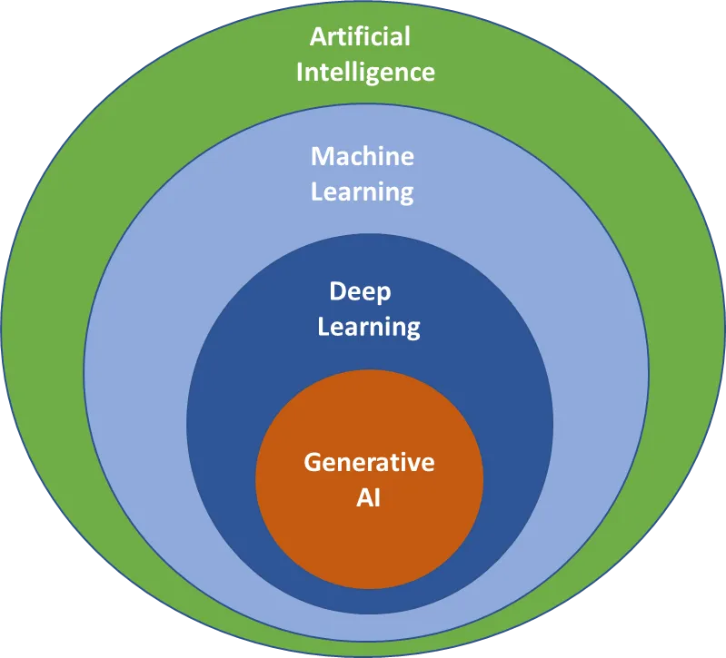
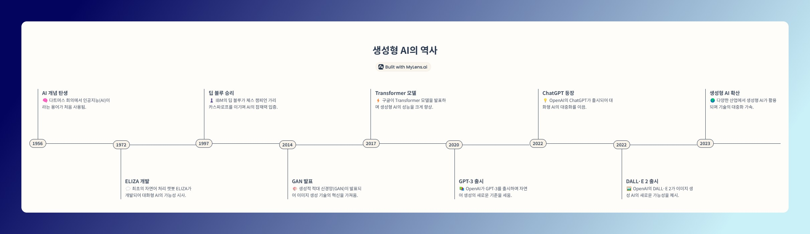
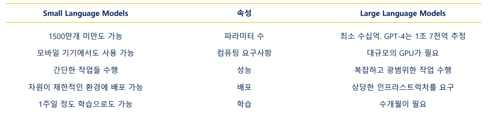

Generative AI Date: January 15, 2025
Generative AI란?
생성 AI (Generative AI)
생성 AI는 인공지능 분야의 하나로서 이미지,텍스트,음악,비디오 등 새롭고 독창적인 콘텐츠를 만들 수 있는 모델과 알고리즘을 연구하는 분야 입니다.
Source: https://medium.com/@amol-wagh/whatsgenerative-ai
생성 AI의 역사
Generative AI(생성형 AI 혹은 생성 AI)는 단어 그대로 인공지능이 무엇인가를 '만든다'는 것에 주목하는 인공지능 모델입니다. 과거에도 무엇인가를 '생성'하는 인공지능은 존재 했지만, 2014년 Generative Adversarial Network(GAN)의 등장으로 본격적인 Generative AI의 시대가 시작되었다고 볼 수 있습니다.
- 인류는 지난 수백 년 동안 자동 계산을 구현하고자 하는 시도를 해왔음
- 1940년대 말 현대 컴퓨터의 시초가 되는 모델들이 개발되면서, 인공지능에 대한 연구들이 진행되었음
- 몇 번의 겨울(인공지능 연구 침체기)을 지나고, 2010년대에 대규모 데이터와 컴퓨터 자원을 활용한 연구들이 각광을 받기 시작함
- 2023년 ChatGPT의 시대를 지나면서 현재 우리는 '생성 AI'의 시대에 살고 있음
예를 들어 생성 AI의 역사를 생성 AI 써서 만들어 보기
아래의 링크를 통해 MyLens.AI라는 서비스를 사용하면 타임라인이나 마인드맵을 손쉽게 만들 수 있습니다.
Generative AI의 기술적 배경 및 특징
인코딩 VS 디코딩
머신러닝의 일반적인 형태는 학습 데이터를 통해 숫자나 범주 데이터로 축약하는 인코딩 과정으로 구성된 반면, 생성 AI의 경우 인공지능의 출력 데이터를 역으로 그림, 글 등의 원하는 형태로 변환시켜주는 디코딩 과정을 통해 콘텐츠가 '생성'됩니다.
Large Language Model / Deep Learning
Large Language Model에 기반하는 생성 AI는 딥러닝 인공 신경망에 기반을 두고 있습니다.
인공지능 전용 하드웨어의 필요성
병렬처리(Parallel processing)의 대표적인 예는 GPU입니다. 딥러닝 알고리즘 역시 병렬처리에 유리한 구조를 가지고 있습니다. NVIDIA는 GPU를 인공지능 전용 하드웨어로 활용하는 방안(CUDA)을 제안하여 현재 인공지능 전용 하드웨어의 대표 기업이 되었습니다.
LLM vs SLM
Large Language Model을 통해 현재 유행하는 생성 AI가 발전했지만, 과도한 컴퓨팅 자원을 요구하는 등의 부담으로 인해 비교적 간단하거나 특정한 업무에 활용할 수 있는 SLM(Small Language Model)도 등장하고 있습니다.
https://www.youtube.com/watch?v=io-9kgRej58&t
모라벡의 역설은 여전히 유효한가?
미국의 로봇 공학자인 한스 모라벡(Hans Moravec)은 ‘어려운 일은 쉽고, 쉬운 일은 어렵다.(Hard problems are easy and easy problems are hard.)’라는 표현으로 컴퓨터와 인간의 능력 차이를 역설적으로 표현하였 고, 이 내용은 그 동안 정설로 여겨졌지만, 최근 인공지능 기술의 급격한 발달로 더 이상은 유효하지 않습니다.